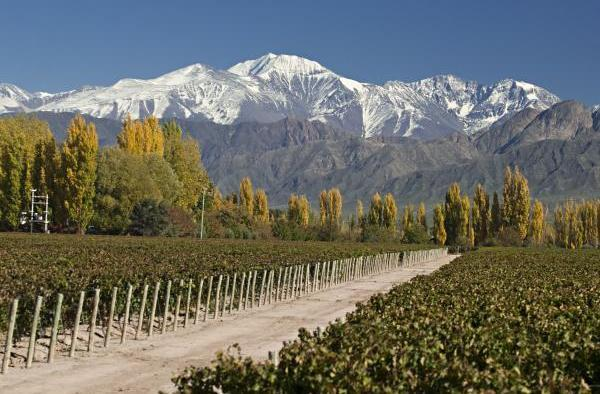

Aquí otra de mis confesiones: la Región de Cuyo es, en mi opinión, la Reina del Enoturismo en
Argentina. Podría darte muchas razones, pero al final sé que es una cuestión de gustos.
San Juan, La Rioja y Mendoza son tres provincias que pisan fuerte en la
producción vinícola (concentrando el 95% del total en nuestro país), y por eso ofrecen
propuestas sumamente atractivas para visitar
Especialidad
Argentina es famosa a nivel mundial por sus inigualables vinos
Malbec, y es
precisamente en la Región de Cuyo donde se producen algunos de los más conocidos. Seguido del
Malbec, encontrarás una interesante producción de Syrah y Cavernet Sauvignon. Si te interesa
probar algo distinto, personalmente te sugiero que prestes atención a la oferta de Petit
Verdot.
Bodegas
Se vuelve difícil recomendar
algunas bodegas, ya que la oferta es interminable, y varía
mucho según el interés de cada visitante. Te recomiendo evitar los nombres conocidos, ya que se
vuelve interesante buscar bodegas boutique con producciones más pequeñas pero exclusivas, e
incluso aquellas que sólo se dedican a la exportación. Te recomiendo algunas destacadas:
Cuándo visitar
Si tenés interés en aprovechar la época de la vendimia, también tendrás que planificar tu viaje
entre febrero y marzo. No obstante, los meses entre septiembre y noviembre también ofrecen un
hermoso clima y propuestas imperdibles.
Para conocer más sobre la
Ruta del Vino en Cuyo,
click aquí
